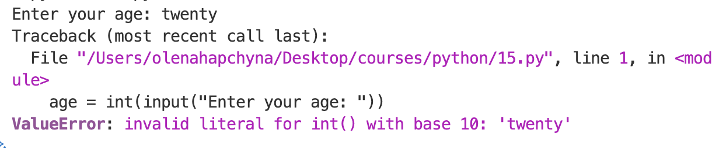
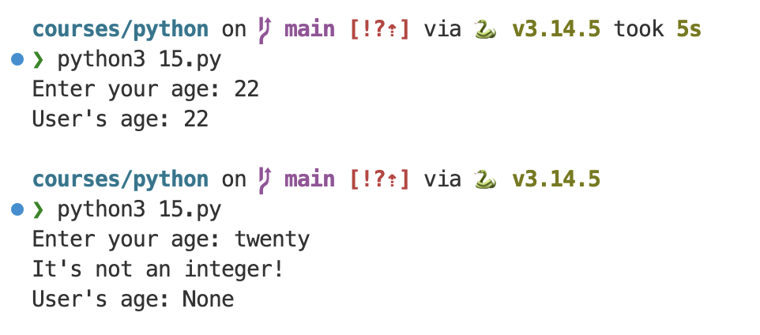

UX та цикли
UX та цикли
Перевірка домашнього завдання: show_result()
def main():
practice_words = get_practice_words()
practice_words = limit_words(practice_words)
mode = choose_mode()
score = run_quiz(practice_words, mode)
show_result(practice_words, score)
def show_result(words, score):
print(f"\n📊 You've got {score}/{len(words)} correct!")Що таке UX?
UX (User Experience) — це те, як людина відчуває себе під час використання програми. Чи зрозуміло їй, що робити? Чи ввічливо програма реагує на помилки? Чи не змушує починати все заново через дрібницю?
Код може ідеально працювати "за задумом" розробника і водночас мати жахливий UX. Давай подивимось на нашу програму. Запусти vocab_app.py і спробуй зробити кілька помилок.
Що зараз не так з нашою програмою (UX-чеклист):
- Якщо ввести текст (наприклад, "two") замість кількості слів — програма падає з помилкою ValueError і закривається.
- Якщо під час вибору режиму ввести 3 (або будь-яке інше число, крім 1) — програма працює так, ніби обрано режим 2, замість того, щоб перепитати (через те, що у нас написано просто else). А якщо ввести літери — взагалі падає з помилкою.
- Якщо під час відповіді (переклад слова) випадково натиснути Enter (нічого не ввівши) — це зараховується як неправильна відповідь, хоча користувач міг просто схибити по клавіатурі.
Сьогодні ми розглянемо два різні способи, як покращити UX дизайн нашої програми.
Повторення: while + not in
Цикл while дозволяє нам повторювати певний блок коду знову і знову, поки умова залишається True. На відміну від for, ми можемо заздалегідь не знати, скільки разів він повториться.
В циклі while обовʼязково має бути умова зупинки. Є два варіанти, як це можна реалізувати:
# Варіант 1
count = 0
while True:
print(count)
count += 1
if count == 3:
break# Варіант 2
count = 0
while count < 3:
print(count)
count += 1Як використати цикл while для перевірки вводу користувача
Коли є скінченна кількість правильних варіантів відповіді (наприклад, три), можна перевірити, чи введене значення є серед дозволених за допомогою in. У парі з while це дає цикл "питай, поки не введуть один із правильних варіантів":
in:
color = input("Select a color: red, blue or green: ").strip().lower()
print(color in ("red", "blue", "green")) # поверне True або Falsenot in:
color = input("Select a color: red, blue or green: ").strip().lower()
print(color not in ("red", "blue", "green")) # поверне True або Falsewhile + not in:
color = input("Select a color: red, blue or green: ").strip().lower()
# поки не введуть колір зі списку
while color not in ("red", "blue", "green"):
# питаємо повторно
color = input("Input red, blue or green: ").strip().lower()Подібна ідея працює і для простішої перевірки – "питай повторно, поки не введуть хоч що-небудь" (поки рядок пустий ""), щоб передбачити випадок, коли користувач ненароком натисне клавішу Enter до того, як введе свою відповідь:
name = input("What is your name? ").strip()
while name == "":
name = input("Please, enter your name: ").strip()Завдання
Завдання 1: Захисти choose_mode()
Онови функцію choose_mode() так, щоб вона не приймала нічого, крім "1" або "2". Якщо користувач введе щось інше, програма має просити його повторити ввід.
Запусти програму і перевір, що станеться, якщо ввести 3 або просто натиснути Enter.
Завдання 2: Захисти ask_question()
Та сама ідея, але інша перевірка: зроби так, щоб програма не приймала порожню відповідь (просто Enter), а перепитувала, поки користувач не введе хоч якийсь переклад.
 Нова тема: try / except
Нова тема: try / except
try/except
Пам'ятаєш демонстрацію на початку уроку — коли програма "падала", якщо ввести не число? try / except — це спосіб "спіймати" таку помилку і дати програмі зреагувати на неї спокійно, замість того, щоб одразу завершитись.
Розглянемо простий приклад, де нам треба дізнатися вік користувача і перетворити його у ціле число:
age = int(input("Enter your age: "))Функція int() приймає текст і перетворює його на ціле число, якщо це можливо. Тобто, int("2") поверне число 2, але int("two"), int("2.5") або int("") видасть помилку, яка називається ValueError (неправильне значення), по передані значення не можливо однозначно перетворити у ціле число.
По замовчування Python реагує на подібні помилки так:

Тобто, програма різко зупиняється і виводиться довге складне повідомлення про помилку. Зауваж, що в цьому повідомленні вказано тип помилки, в даному випадку – ValueError.
Існує спосіб, як можна змінити цю поведінку Python і сказати йому відреагувати на цю помилку якось інакше. Наприклад, вивести повідомлення для користувача, що він зробив не так, і присвоїти змінній age якесь значення за замовчуванням. Для цього використовується конструкція try/except:
try:
код, який пробуємо виконати
except ТипПомилки:
як відреагувати на цю помилку
Як це можна використати для нашого прикладу:
age_input = input("Enter your age: ")
try:
age = int(age_input)
except ValueError:
print("It's not an integer!")
age = None
print(f"User's age: {age}")
Код, який може призвести до помилки (рядок, що містить int()), поміщаємо всередину try, а в except перехоплюємо ValueError і замість того, щоб програма ламалася, виводимо повідомлення для користувача, присвоюємо змінній age значення None, і програма працює далі.

Завдання
Завдання 3: ValueError у limit_words
Онови функцію limit_words() у своєму проєкті. Якщо ввід користувача не є цілим числом, програма не повинна ламатися. Натомість вона має вивести повідомлення "That's not an integer, I'll use the full list instead." і встановити ліміт рівним довжині всього списку слів.
 Домашнє завдання
Домашнє завдання
Нагадування: try/except
Заміни ❓ в коді нижче на слова, яких не вистачає. Тоді натисни ▶️, щоб запустити програму. Якщо все правильно, виведеться текст "Not a valid number!".
Очікування запуску...
Важливо: хоча можна просто написати except: без типу помилки, потрібно завжди вказувати конкретний тип. Інакше програма ігноруватиме абсолютно всі помилки (наприклад, одруківки в коді), а не тільки ValueError.
Типи помилок
На уроці ми розглянули лише один тип помилки – ValueError, що виникає, якщо користувач введе неправильне значення (value). Насправді таких типів є доволі багато. Розглянемо іще два з них:
- TypeError виникає, коли дію застосовують до типу даних, для якого вона не має сенсу.
- ZeroDivisionError виникає, коли ми намагаємося поділити число на нуль.
У наступних завданнях, заміни ❓ на правильний тип помилки. Якщо завдання виконане правильно, має вивестися слово None і більше нічого.
Очікування запуску...
Очікування запуску...
Очікування запуску...
try/except + функції
Часто try/except використовують всередині функцій, щоб зробити їх "безпечними". Якщо виникає помилка, функція не ламає всю програму, а просто ловить її і повертає безпечне значення за замовчуванням (наприклад, None або 0).
Зверни увагу: ми можемо писати return прямо всередині try. Якщо дія успішна, функція одразу поверне результат. Якщо ж під час дії (наприклад, ділення) станеться помилка, return не встигне спрацювати, і виконання миттєво перестрибне у блок except.
Заміни ❓ у коді нижче, щоб створити "безпечну" функцію ділення, яка ловить ZeroDivisionError і повертає None, якщо хтось намагається поділити на нуль.
Очікування запуску...